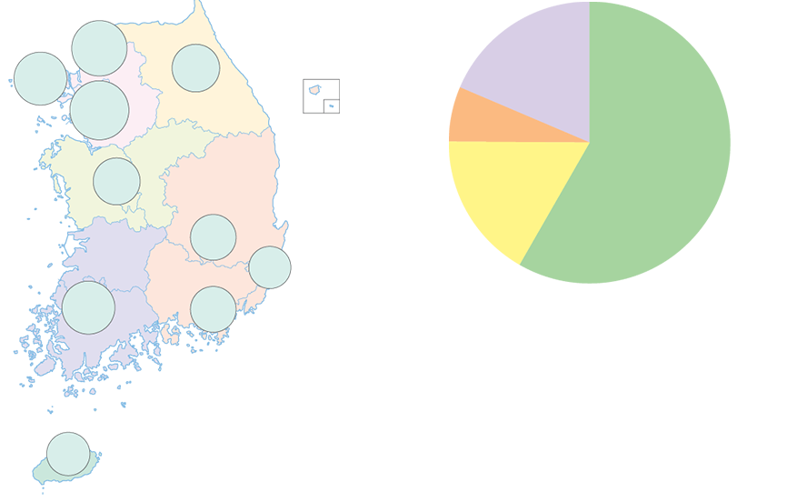

- 물음 1
- 물음 2
-
지역별 3월 평균 초미세 먼지 농도는 어떤 그래프로 나타냈나요?
지역별 3월 평균 초미세 먼지 농도초미세 먼지 성분서울
34인천
32강원
30경기
37대전
27대구
26울산
23광주
32부산
26제주
24황산염·
질산염 등
(58.3 %)탄소류와
검댕
(16.8 %)광물(6.3 %)기타
(18.6 %)(출처: 행정 간행물, 환경부, 2016.)초미세 먼지
농도 기준
(단위: ㎍/㎥)좋음 보통 나쁨 매우 나쁨 0 ~ 15 16 ~ 35 36 ~ 75 76 ~ (출처: 미세 먼지 월별 도시별 대기 오염도, 국가 통계 포털, 2018.)예그림그래프로 나타냈습니다. -
초미세 먼지 성분은 어떤 그래프로 나타냈나요?
지역별 3월 평균 초미세 먼지 농도초미세 먼지 성분서울
34인천
32강원
30경기
37대전
27대구
26울산
23광주
32부산
26제주
24황산염·
질산염 등
(58.3 %)탄소류와
검댕
(16.8 %)광물(6.3 %)기타
(18.6 %)(출처: 행정 간행물, 환경부, 2016.)초미세 먼지
농도 기준
(단위: ㎍/㎥)좋음 보통 나쁨 매우 나쁨 0 ~ 15 16 ~ 35 36 ~ 75 76 ~ (출처: 미세 먼지 월별 도시별 대기 오염도, 국가 통계 포털, 2018.)예원그래프로 나타냈습니다.